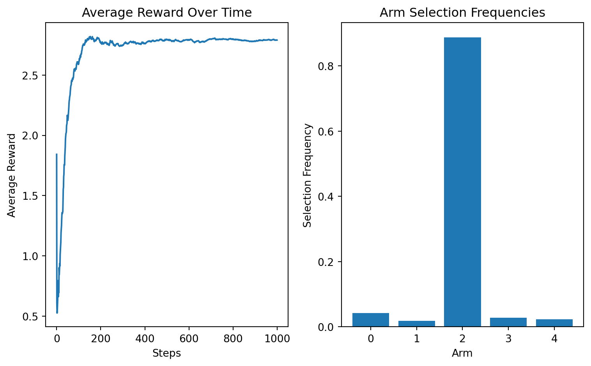
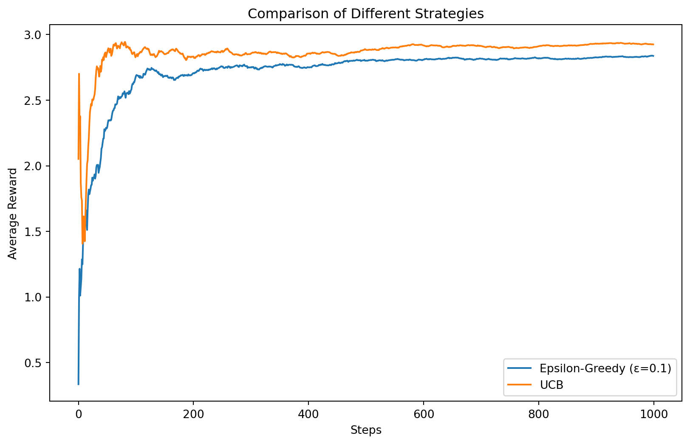

import numpy as np
import matplotlib.pyplot as plt
from typing import List, Tuple
class SlotMachine:
def __init__(self, mean: float, std: float = 1.0):
self.mean = mean
self.std = std
def pull(self) -> float:
return np.random.normal(self.mean, self.std)
class BanditEnvironment:
def __init__(self, means: List[float], stds: List[float]):
self.machines = [SlotMachine(mean, std)
for mean, std in zip(means, stds)]
self.n_machines = len(means)
def pull_arm(self, arm: int) -> float:
return self.machines[arm].pull()
# Create an environment with 5 slot machines
true_means = [1.0, 2.0, 3.0, 1.5, 0.5]
true_stds = [1.0, 1.0, 1.0, 1.0, 1.0]
env = BanditEnvironment(true_means, true_stds)Introduction
Multi-armed bandits (MAB) represent one of the simplest yet most profound examples of the exploration-exploitation dilemma in reinforcement learning. In this blog post, we’ll explore what multi-armed bandits are, implement a simple solution, and see how they connect to broader reinforcement learning concepts.
What is a Multi-Armed Bandit?
The term “multi-armed bandit” comes from imagining a gambler at a row of slot machines (one-armed bandits), deciding which machines to play to maximize their returns. Each machine has its own probability distribution of rewards, unknown to the gambler.
Implementing a Simple Bandit Environment
Let’s first create a simple environment to simulate our slot machines:
Epsilon-Greedy Strategy
One of the simplest strategies for solving the multi-armed bandit problem is the ε-greedy approach. Here’s an implementation:
class EpsilonGreedy:
def __init__(self, n_arms: int, epsilon: float = 0.1):
self.n_arms = n_arms
self.epsilon = epsilon
self.q_values = np.zeros(n_arms)
self.arm_counts = np.zeros(n_arms)
def select_arm(self) -> int:
if np.random.random() < self.epsilon:
return np.random.randint(self.n_arms)
return np.argmax(self.q_values)
def update(self, arm: int, reward: float):
self.arm_counts[arm] += 1
n = self.arm_counts[arm]
self.q_values[arm] = ((n - 1) / n) * self.q_values[arm] + (1 / n) * reward
# Run an experiment
def run_experiment(agent, env, n_steps: int) -> Tuple[List[float], List[int]]:
rewards = []
chosen_arms = []
for _ in range(n_steps):
arm = agent.select_arm()
reward = env.pull_arm(arm)
agent.update(arm, reward)
rewards.append(reward)
chosen_arms.append(arm)
return rewards, chosen_arms
# Run and plot results
agent = EpsilonGreedy(len(true_means))
n_steps = 1000
rewards, chosen_arms = run_experiment(agent, env, n_steps)
plt.figure(figsize=(8, 5))
# Plot rewards
plt.subplot(1, 2, 1)
plt.plot(np.cumsum(rewards) / np.arange(1, n_steps + 1))
plt.xlabel('Steps')
plt.ylabel('Average Reward')
plt.title('Average Reward Over Time')
# Plot arm selection frequencies
plt.subplot(1, 2, 2)
plt.bar(range(len(true_means)),
[np.mean(np.array(chosen_arms) == i) for i in range(len(true_means))])
plt.xlabel('Arm')
plt.ylabel('Selection Frequency')
plt.title('Arm Selection Frequencies')
plt.tight_layout()
plt.show()
Connection to Reinforcement Learning
Multi-armed bandits are essentially a simplified version of the full reinforcement learning problem. Here’s how they relate:
States: Bandits are stateless RL problems. In full RL, actions can change the state of the environment.
Actions: Each arm pull is an action, just like in RL.
Rewards: The reward mechanism is the same as in RL - immediate feedback after each action.
Exploration vs. Exploitation: This fundamental tradeoff in bandits appears throughout RL.
Let’s implement a simple comparison of different exploration strategies:
class UCBAgent:
def __init__(self, n_arms: int, c: float = 2.0):
self.n_arms = n_arms
self.c = c
self.q_values = np.zeros(n_arms)
self.arm_counts = np.zeros(n_arms)
self.total_counts = 0
def select_arm(self) -> int:
self.total_counts += 1
ucb_values = np.zeros(self.n_arms)
for arm in range(self.n_arms):
if self.arm_counts[arm] == 0:
return arm
ucb_values[arm] = self.q_values[arm] + \
self.c * np.sqrt(np.log(self.total_counts) / self.arm_counts[arm])
return np.argmax(ucb_values)
def update(self, arm: int, reward: float):
self.arm_counts[arm] += 1
n = self.arm_counts[arm]
self.q_values[arm] = ((n - 1) / n) * self.q_values[arm] + (1 / n) * reward
# Compare strategies
agents = {
'Epsilon-Greedy (ε=0.1)': EpsilonGreedy(len(true_means), 0.1),
'UCB': UCBAgent(len(true_means))
}
results = {}
for name, agent in agents.items():
rewards, _ = run_experiment(agent, env, n_steps)
results[name] = rewards
plt.figure(figsize=(10, 6))
for name, rewards in results.items():
plt.plot(np.cumsum(rewards) / np.arange(1, n_steps + 1), label=name)
plt.xlabel('Steps')
plt.ylabel('Average Reward')
plt.title('Comparison of Different Strategies')
plt.legend()
plt.show()
Conclusion
Multi-armed bandits serve as an excellent introduction to reinforcement learning concepts. They capture the essential exploration-exploitation tradeoff while being simple enough to understand and implement. As we move to full RL problems, these concepts extend to include state transitions and delayed rewards, but the fundamental principles remain the same.
References
- Sutton, R. S., & Barto, A. G. (2018). Reinforcement learning: An introduction. MIT press.
- Lattimore, T., & Szepesvári, C. (2020). Bandit algorithms. Cambridge University Press.